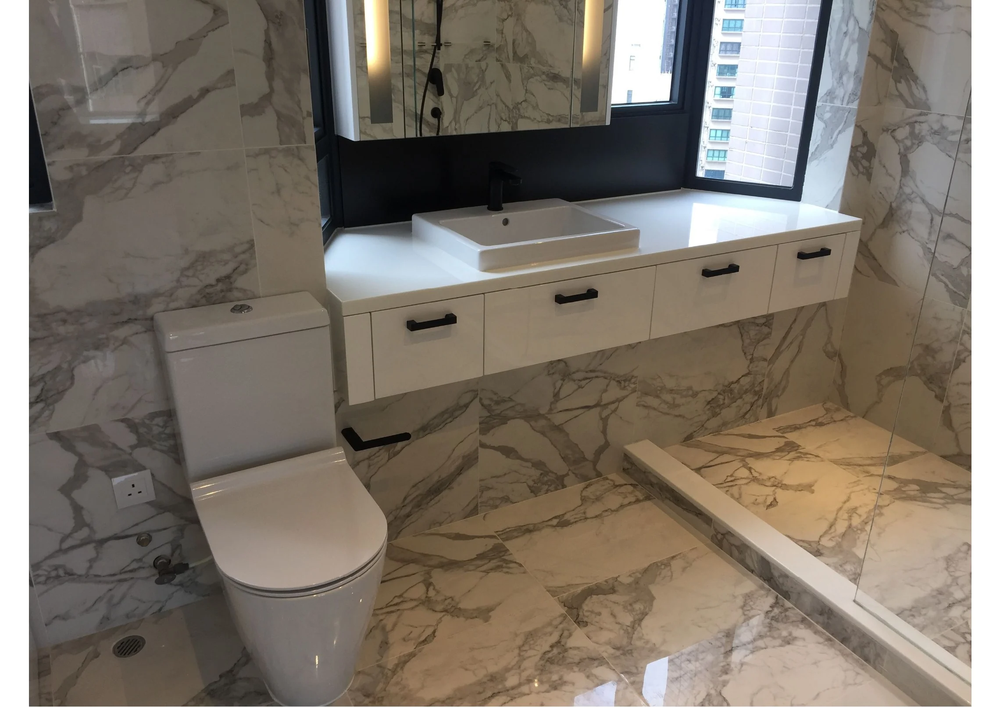
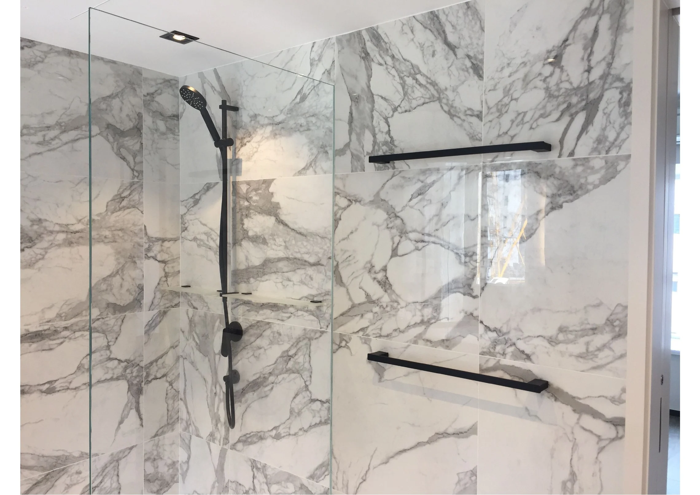
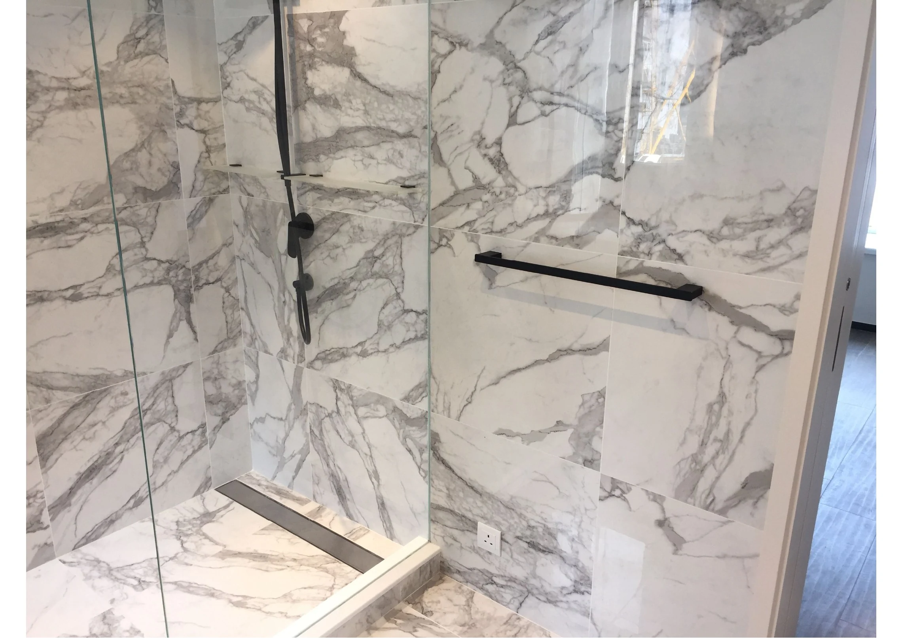

Surface continuity
Strong veining is carried across the bathroom wall and shower zone, making the stone the primary visual feature of the room.
A Central bathroom documented through expressive veined stone, a clear glass shower screen and crisp white joinery. Dark metal fittings add a measured contrast against the lighter surfaces.

Selected views of the vanity and shower area in the supplied Central project record.



Strong veining is carried across the bathroom wall and shower zone, making the stone the primary visual feature of the room.
A clear glass screen keeps the shower visually open; white storage fronts and dark metal rails give the stone a crisp, legible edge.
The supplied source record is photographic rather than a written client brief or contract schedule. This description is limited to visible finishes and fittings; it does not infer waterproofing, concealed work or an unrecorded scope.